Europe · 19–31 December 2026
Replacing Lapland and Stockholm: nine options
Paris 10–12 and Iceland 12–19 stay as in D7 ($9,385 incl. the CDG night). Each option fills 19–30 Dec and ends at the CDG hotel for QR40 at 15:15 on 31 Dec. Ranked by fit to the family's priorities within budget. AUD for all four; long-haul excluded. Prices checked 22–23 Oct 2026; nothing booked.
| # | Option | Total | vs $15k | vs D7 $20,094 | Best 3 | Odds |
|---|---|---|---|---|---|---|
| 1 | Slovakia: High Tatras snow, sleighs and hot pools Iceland → Budapest → High Tatras (one base) → Paris | $19,030 net $17,734 | +$4,030 | −$1,064 | Husky sled ride in the Tatra foothills Horse sleigh through Ždiar with campfire and thermal pools Lomnický štít cable car to 2,634 m | Snow: Good (1,350 m base, snowmaking; sled runs need natural snow) Aurora: None |
| 2 | Budget-first: Tatras on a lean budget Iceland (trimmed) → Budapest → Liptov/Tatras → Paris | $15,028 net $13,732 | +$28 | −$5,066 | Husky sled ride Hrebienok sled run and Christmas market Tatralandia thermal pools in the snow | Snow: Good (Važec 800 m; Tatras 15–40 min) Aurora: None |
| 3 | Slovakia + Czechia by night train Iceland → Budapest → Tatras (6) → sleeper → Prague (3) → Paris | $18,672 net $17,376 | +$3,672 | −$1,422 | Husky sled ride in the Tatras Night train in a family couchette Prague Christmas markets (to 6 Jan) | Snow: Good in the Tatras; little in Prague Aurora: None |
| 4 | Norway: fjords and the mountain railways Iceland → Bergen (3) → Flåm (2) → Geilo (5) → Oslo airport → Paris | $23,218 net $21,922 | +$8,218 | +$3,124 | Flåm Railway and the Bergen Line over Hardangervidda Nærøyfjord cruise (UNESCO) Geilo husky half-day | Snow: Very good in Geilo (800 m) and on the plateau; Bergen is usually wet Aurora: Low (60°N) |
| 5 | Switzerland: Jungfrau base + Zermatt igloo night Iceland → Zürich → Interlaken (11, with 1 igloo night) → TGV to Paris | $24,613 net $23,317 | +$9,613 | +$4,519 | Iglu-Dorf igloo night at 2,700 m Jungfraujoch Ice Palace Gornergrat + Matterhorn Glacier Paradise | Snow: Poor in Interlaken (570 m); certain above 2,500 m Aurora: None |
| 6 | Sweden: Kiruna, Icehotel and Sámi reindeer Iceland → Stockholm → Kiruna (11) → Paris | $25,272 net $23,976 | +$10,272 | +$5,178 | Nutti Sámi Siida reindeer sledding Icehotel 37 (opens 11 Dec) Husky tour + aurora nights | Snow: Near-certain Aurora: High (68°N, clear-sky dependent) |
| 7 | Norway + Sweden: Arctic rail (Tromsø → Narvik → Kiruna) Iceland → Oslo → Tromsø (4) → bus + Ofoten Line → Kiruna (7) → Paris | $27,131 net $25,835 | +$12,131 | +$7,037 | Orca and humpback whale watching Sámi reindeer sledding in Tromsø Ofoten railway over the mountains to Kiruna | Snow: Near-certain Aurora: Highest of all options |
| 8 | Finland: Saariselkä and Inari, Arctic Lapland Iceland → Helsinki → Ivalo → Saariselkä (11) → Paris | $28,279 net $26,983 | +$13,279 | +$8,185 | Husky farm visit (10 km) Reindeer farm and sleigh Siida Sámi museum, Inari | Snow: Near-certain Aurora: High |
| 9 | Czechia: Prague and Český Krumlov Iceland → Prague (5) → Český Krumlov (3) → Prague (3) → Paris | $18,893 net $17,597 | +$3,893 | −$1,201 | Prague Christmas markets Český Krumlov castle town Aquapalace water park | Snow: Low (lowland; Krkonoše is 2.5 h away) Aurora: None |
"Net" = total less 40,000 Accor points (€800 ≈ $1,296 at €1 = $1.62). Tiers: S = new to the family and only possible here; A = strong; B = nice to have.
Accor points and Accor+
Points value (verified on all.accor.com): 2,000 points = €40, used in 2,000-point steps (1,000 = €20 minimum online). 40,000 points ≈ €800 ≈ $1,296. Usable on room and on-site spend at participating Accor hotels; book a flexible rate so points come back if you cancel. Prepaid non-refundable rates need part card payment.
Where to use them: the value per point is fixed, so use them where you'd stay at Accor anyway and on flexible rates: Paris 10–12 (e.g. Novotel Paris Centre Tour Eiffel family room, or an Adagio aparthotel with kitchen) and the CDG night 30–31 (Novotel or Pullman CDG). Those three nights are worth roughly $900–1,000 (E), so about 28,000–30,000 points; put the rest on Accor breakfasts/dinners during those stays, or on Novotel Prague (option 3) or a Zürich Novotel night (option 5). The Tatras, Norway, Kiruna and Saariselkä bases have no Accor hotels.
Accor+ Explorer in Europe: per the T&Cs updated 19 May 2026, the member rate is 15% off the best available non-promotional public rate, worldwide. The Stay Plus free-night certificate and the dining discount apply only in the participating countries (Asia-Pacific and Middle East, including Qatar), not in Europe. Platinum gets no free breakfast in Europe.
Not verified: live Accor+ prices. all.accor.com didn't return results to an unauthenticated search, and Booking.com showed the Paris, CDG and Budapest Accor hotels as unavailable for 2 adults + 2 children. Check while signed in.
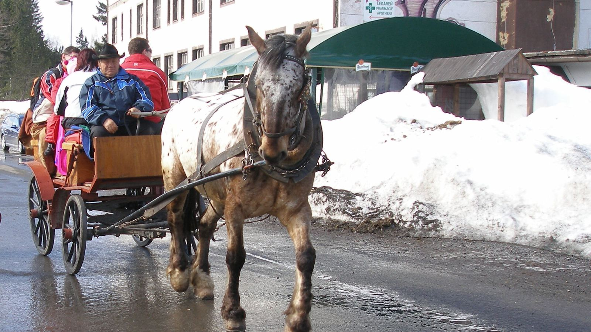
Option 1
Slovakia: High Tatras snow, sleighs and hot pools
Iceland → Budapest → High Tatras (one base) → Paris
The best fit for the money: real mountains, snow at the doorstep, animals, Goral Christmas and outdoor thermal pools, at about $1k under D7.
Day by day
- Sat 19 Dec: Iceland → Wizz Air 19:40 → Budapest 01:05; airport hotel
- Sun 20: hire car, drive 4 h to the Tatras; supermarket shop
- Mon 21–Wed 23: Hrebienok funicular + 2.5 km sled run and Christmas market; Štrbské Pleso lake; Belianska cave (open 22–23, closed Mon 21 and 24–31)
- Thu 24: Christmas Eve at the apartment (Slovak carp-and-cabbage-soup supper optional); Tatralandia is open 10–20
- Fri 25–Sat 26: husky ride; Ždiar horse sleigh, campfire and Vrbov thermal pools
- Sun 27–Tue 29: Lomnický štít cable car (weather day), Tatra Ice Dome if open, sledging, Tatralandia or AquaCity
- Wed 30: drive to Budapest airport (4 h), easyJet 15:05 → CDG 17:30; CDG hotel
Stay
- Mezonet Tatry, Vyšné Hágy: 2 bed, 2 bath, kitchen, 9.2 (77 reviews). 10 nights $2,370 live (shown without free cancellation for 20–30; the 20–29 rate was free-cancellable). Next to the Tatra electric railway.
- Flow Hotel, Budapest airport: Suite, 9.2 (3,059), $243, free cancellation. For the 01:05 arrival.
Experiences
| Tier | What | Family | 19–31 Dec |
|---|---|---|---|
| S | Husky sled ride, Tatra foothills | ~$1,040 (E, reseller) | Snow-dependent; Christmas dates to confirm |
| S | Tatra Ice Dome, Hrebienok | Free last season | 2026/27 not announced |
| A | Ždiar horse sleigh + campfire + Vrbov thermal | ~$500 (E) | Snow-dependent |
| A | Hrebienok funicular + 2.5 km sled run | $193 | Daily if snow |
| A | Lomnický štít cable car | ~$490 (E) | Weather-dependent; book ahead |
| A | Tatralandia thermal water park | $220 | Open 24–25 Dec, 10–20 |
| B | Belianska cave | ~$70 | Closed Mondays and 24–31 Dec |
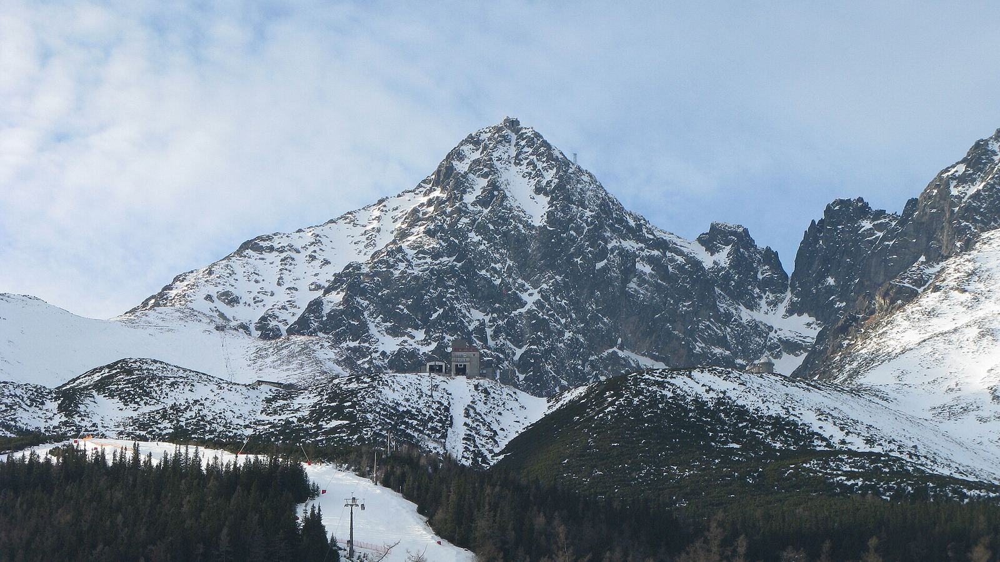
Catches
- No aurora. Snow at 1,350 m is good but the sled run, huskies and sleigh need natural snow.
- 26 Dec–1 Jan brings Slovak, Polish and Czech crowds to the funicular and cable car.
- 4 h drive each way to Budapest; easyJet bags extra.
- Accor: none in the Tatras. Points go on Paris/CDG nights.
Cost lines (19–30 Dec block; R = live / operator, E = estimate)
| Flight Keflavík→Budapest, Wizz Air 19 Dec 19:40–01:05 non-stop | $640 | R |
| Bags on Wizz Air | $200 | E |
| Flight Budapest→CDG, easyJet 30 Dec 15:05–17:30 non-stop | $1,342 | R |
| Bags on easyJet | $150 | E |
| Budapest airport night 19–20: Flow Hotel suite (9.2, 3,059 reviews, free cancellation) | $243 | R |
| Hire car Budapest 20–30 Dec, winter tyres, fuel, Slovak vignette | $980 | E |
| Mezonet Tatry, Vyšné Hágy, 2 bed / 2 bath, 9.2 (77): 10 nights 20–30 Dec | $2,370 | R |
| Husky sled ride (reseller, €160 pp) | $1,037 | E |
| Ždiar horse sleigh + campfire + Vrbov thermal pools | $500 | E |
| Hrebienok sledging 4 h ticket + sled hire | $193 | R |
| Lomnický štít cable car | $490 | E |
| Tatralandia thermal water park | $220 | R |
| Belianska cave (20, 22 or 23 Dec) | $70 | E |
| Food, self-catering, 11 days × $110 | $1,210 | E |
| Block 19–31 Dec | $9,645 | |
| Paris 10–12 + Iceland 12–19 + CDG night (D7) | $9,385 | R/E |
| Total | $19,030 | |
| Less 40,000 Accor points on Accor nights (see below) | −$1,296 | R |
| Net | $17,734 |
Option 2
Budget-first: Tatras on a lean budget
Iceland (trimmed) → Budapest → Liptov/Tatras → Paris
The only option that lands on about $15k. It keeps snow, huskies, a sled run and hot pools, and trims Iceland and Paris at the edges.
Day by day
- Iceland 12–19 as D7, minus Into the Glacier (Katla ice cave stays) and with basic car cover
- Sat 19: Wizz Air → Budapest 01:05; Lotus House family room
- Sun 20: hire car, drive to Važec
- 21–29: same Tatra days as option 1 without the sleigh, Lomnický štít and caves; Christmas at the apartment
- Wed 30: Air Serbia 15:10 via Belgrade → CDG 19:45
Stay
- Apartmán 501, Važec: 2 bed, kitchen, 9.9 (20 reviews). 10 nights $1,226 live (no free cancellation shown for these dates; the 9-night rate was free-cancellable at $1,585).
- Lotus House, Budapest: Family room, 9.5 (226), $145, free cancellation.
Experiences
| Tier | What | Family | 19–31 Dec |
|---|---|---|---|
| S | Husky sled ride | ~$1,040 (E) | Snow-dependent |
| A | Hrebienok sled run | $193 | Daily if snow |
| A | Tatralandia thermal park | $220 | Open 24–25 Dec 10–20 |
| S | Tatra Ice Dome | Free last season | Not announced |
Catches
- Only 20 reviews on the apartment, and the cheapest rate isn't free-cancellable.
- Iceland loses Into the Glacier; basic car cover raises damage risk.
- Air Serbia adds a Belgrade stop.
- Accor: points on Paris/CDG; that brings the net to about $13.7k.
Cost lines (19–30 Dec block; R = live / operator, E = estimate)
| Flight Keflavík→Budapest, Wizz Air 19 Dec 19:40–01:05 | $640 | R |
| Bags | $200 | E |
| Flight Budapest→CDG, Air Serbia 30 Dec 15:10–19:45 (via BEG) | $1,182 | R |
| Bags | $150 | E |
| Budapest airport night: Lotus House family room (9.5, 226, free cancellation) | $145 | R |
| Hire car 20–30 Dec, basic cover, fuel, vignette | $900 | E |
| Apartmán 501, Važec, 2 bed, 9.9 (20): 10 nights 20–30 Dec | $1,226 | R |
| Husky sled ride | $1,037 | E |
| Hrebienok sledging + sled hire | $193 | R |
| Tatralandia thermal water park | $220 | R |
| Food, self-catering, 11 days × $100 | $1,100 | E |
| Iceland trim: skip Into the Glacier (Katla ice cave stays) | −$650 | R |
| Iceland trim: basic car cover instead of gravel/tyre cover | −$500 | E |
| Paris trim: cheaper family room (~$260 vs $360 a night) | −$200 | E |
| Block 19–31 Dec | $5,643 | |
| Paris 10–12 + Iceland 12–19 + CDG night (D7) | $9,385 | R/E |
| Total | $15,028 | |
| Less 40,000 Accor points on Accor nights (see below) | −$1,296 | R |
| Net | $13,732 |
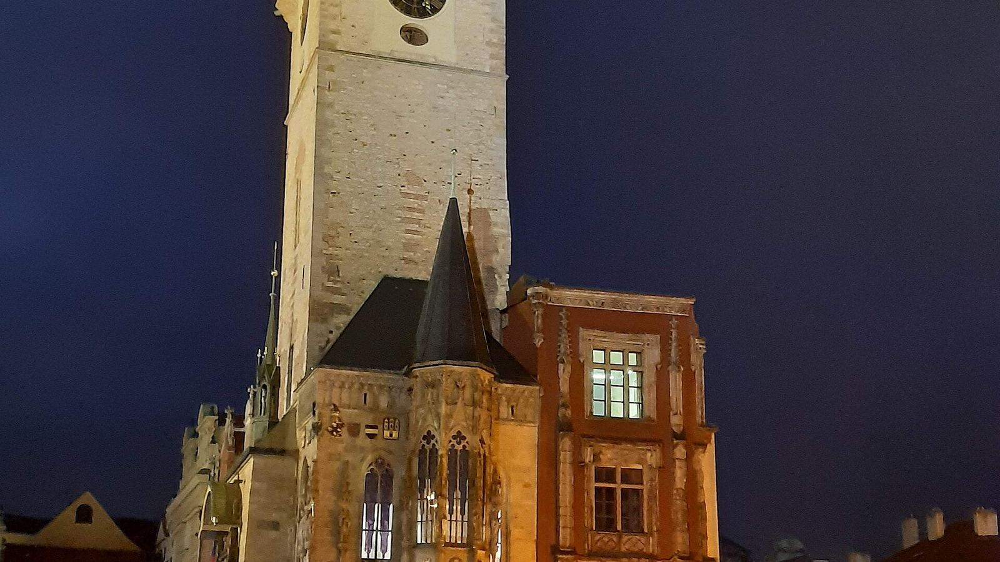
Option 3
Slovakia + Czechia by night train
Iceland → Budapest → Tatras (6) → sleeper → Prague (3) → Paris
Two countries, no car and no extra flight in the middle: the sleeper is an experience in itself. Prague gives the city Christmas without a long stay.
Day by day
- Sat 19: Wizz Air → Budapest 01:05; airport hotel
- Sun 20: train to Poprad (~5 h); Tatra electric railway to Vyšné Hágy
- 21–25: Hrebienok sled run, Belianska cave (22–23), husky ride, Christmas Eve at the apartment, Tatralandia 25th
- Sat 26: Lomnický štít; EN 442 sleeper 23:40 from Poprad
- Sun 27: Prague 07:26. 27–29: Old Town markets, castle, Aquapalace water park
- Wed 30: Smartwings 12:25 → CDG 14:15
Stay
- Mezonet Tatry: 6 nights about $1,420 (pro-rata of the live 10-night price; E).
- The Nova Apart Hotel, Prague: Kitchen, 9.4 (486), 27–30 Dec $1,155, free cancellation (live).
- Accor alternative in Prague: Novotel Praha Wenceslas Square (8.6, 1,475): unavailable on Booking.com for 27–30; 24–26 showed from $890. Check all.accor.com for the Accor+ rate.
Experiences
| Tier | What | Family | 19–31 Dec |
|---|---|---|---|
| S | Husky sled ride | ~$1,040 (E) | Snow-dependent |
| A | Night train with family couchette | ~$405 (E) | EN 442 daily |
| A | Hrebienok sled run | $193 | If snow |
| A | Lomnický štít | ~$490 (E) | Weather |
| A | Tatralandia | $220 | Open 24–25 Dec |
| B | Prague markets, castle, Aquapalace | ~$250 (E) | Markets to 6 Jan |
Catches
- Couchettes are 4-berth and basic; the sleeper fare is an estimate.
- Prague is "a city": fine for 3 nights, not more.
- No aurora.
Cost lines (19–30 Dec block; R = live / operator, E = estimate)
| Flight Keflavík→Budapest, Wizz Air 19 Dec 19:40–01:05 | $640 | R |
| Bags | $200 | E |
| Budapest airport night: Flow Hotel suite | $243 | R |
| Train Budapest→Poprad 20 Dec (~5 h via Košice) | $160 | E |
| Mezonet Tatry, 6 nights 20–26 Dec (pro-rata of the live 10-night price) | $1,422 | E |
| Tatra electric railway + buses (car-free) | $200 | E |
| Night train EN 442 Poprad 23:40 → Praha 07:26, 4-berth couchette for the family | $405 | E |
| The Nova Apart Hotel, Prague, 9.4 (486), kitchen: 3 nights 27–30 Dec | $1,155 | R |
| Flight Prague→CDG, Smartwings 30 Dec 12:25–14:15 non-stop | $1,187 | R |
| Bags | $150 | E |
| Husky sled ride | $1,037 | E |
| Hrebienok sledging + sled hire | $193 | R |
| Lomnický štít cable car | $490 | E |
| Tatralandia thermal water park | $220 | R |
| Belianska cave | $70 | E |
| Prague: Aquapalace water park day + castle | $250 | E |
| Food, 11 days × $115 | $1,265 | E |
| Block 19–31 Dec | $9,287 | |
| Paris 10–12 + Iceland 12–19 + CDG night (D7) | $9,385 | R/E |
| Total | $18,672 | |
| Less 40,000 Accor points on Accor nights (see below) | −$1,296 | R |
| Net | $17,376 |
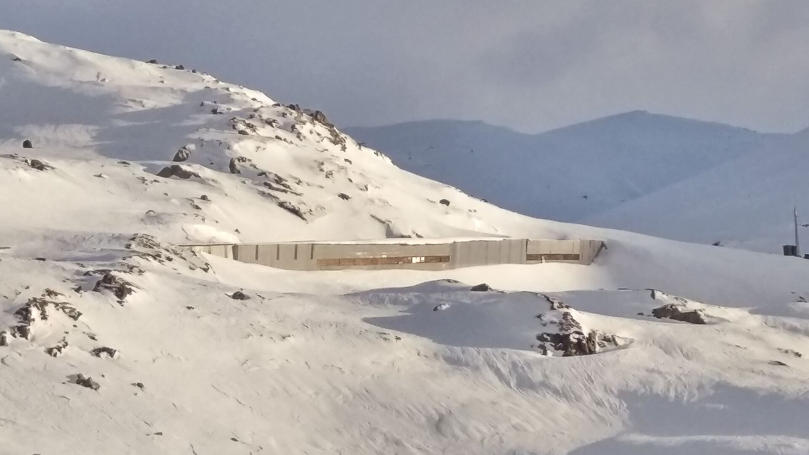
Option 4
Norway: fjords and the mountain railways
Iceland → Bergen (3) → Flåm (2) → Geilo (5) → Oslo airport → Paris
The most scenic option per dollar, all by train, with a mountain Christmas in Geilo. About $3k over D7.
Day by day
- Sat 19: Transavia via Amsterdam 14:45 → Bergen 23:25
- Sun 20–Mon 21: Pepperkakebyen (world's biggest gingerbread town), Fløibanen funicular, Bryggen
- Tue 22: Bergen Line to Myrdal, Flåm Railway down to Flåm
- Wed 23: Nærøyfjord cruise to Gudvangen and back (no sailings 24–26)
- Thu 24: Flåm Railway up, Bergen Line to Geilo (check the Christmas Eve timetable)
- 25–28: Geilo: husky half-day, horse sleigh, sledging, ski school optional
- Tue 29: train to Oslo airport hotel. Wed 30: Norwegian 08:30 → CDG 10:55
Stay
- Rosenberg Apartments, Bergen: 2 bed, kitchen, 8.9 (170), $1,239, free cancellation.
- Flåmsbrygga Apartments, Flåm: 8.3 (691), $1,510 for 2 nights, free cancellation.
- Geilo Gaarden, Geilo: 3 bed, kitchen, 9.4 (10), $2,637 for 5 nights, free cancellation.
- Comfort Hotel RunWay, Oslo airport: Family room, 8.3 (9,971), $229, free cancellation.
Experiences
| Tier | What | Family | 19–31 Dec |
|---|---|---|---|
| S | Flåm Railway + Bergen Line | ~$1,000 all rail (E) | Winter timetable from 15 Dec not yet published |
| S | Nærøyfjord cruise | ~$450 (E) | No sailings 24–26 Dec |
| A | Geilo Husky half-day | $1,305 | Book; Christmas dates to confirm |
| A | Pepperkakebyen, Bergen | ~$60 (E) | 14 Nov–10 Jan, closed 25 Dec |
| B | Geilo horse sleigh | E | Price not published |
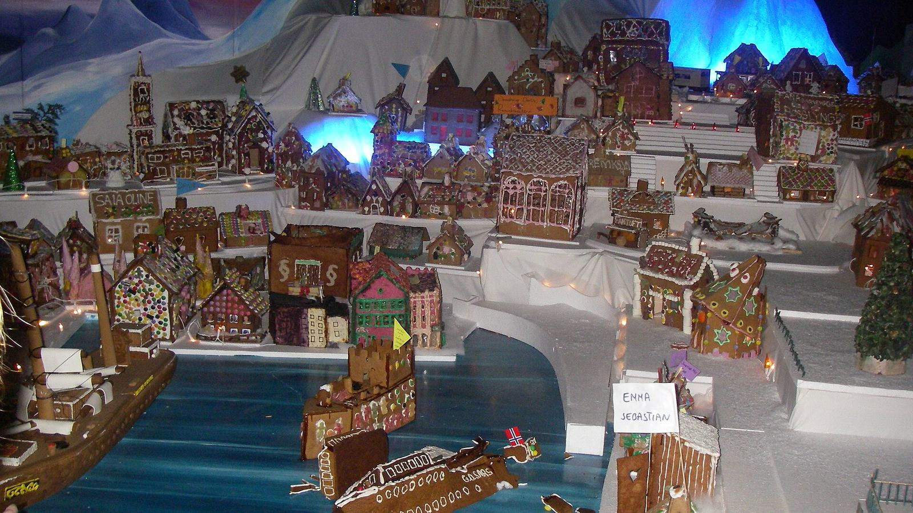
Catches
- Norway prices: food is the dearest in the plan.
- Christmas Eve train timetables and the Flåm winter timetable after 15 Dec aren't published yet.
- Aurora unlikely this far south.
- Accor: no Accor hotels at these bases.
Cost lines (19–30 Dec block; R = live / operator, E = estimate)
| Flight Keflavík→Bergen, Transavia/KLM 19 Dec 14:45–23:25 (via AMS) | $1,152 | R |
| Bags | $150 | E |
| Rosenberg Apartments, Bergen, 2 bed, 8.9 (170): 19–22 Dec | $1,239 | R |
| Flåmsbrygga Apartments, Flåm, 8.3 (691): 22–24 Dec | $1,510 | R |
| Geilo Gaarden, 3 bed, 9.4 (10): 24–29 Dec | $2,637 | R |
| Comfort Hotel RunWay, Oslo airport, family room 8.3: 29–30 Dec | $229 | R |
| Rail: Bergen→Myrdal→Flåm, Flåm→Myrdal→Geilo, Geilo→Oslo airport | $1,000 | E |
| Flight Oslo→CDG, Norwegian 30 Dec 08:30–10:55 non-stop | $1,221 | R |
| Bags | $150 | E |
| Nærøyfjord cruise Flåm–Gudvangen (no sailings 24–26 Dec) | $450 | E |
| Geilo Husky half-day (NOK 2,500 adult / 2,000 child) | $1,305 | R |
| Geilo horse sleigh, Pepperkakebyen, Fløibanen, sledging | $590 | E |
| Food, 11 days × $200 | $2,200 | E |
| Block 19–31 Dec | $13,833 | |
| Paris 10–12 + Iceland 12–19 + CDG night (D7) | $9,385 | R/E |
| Total | $23,218 | |
| Less 40,000 Accor points on Accor nights (see below) | −$1,296 | R |
| Net | $21,922 |
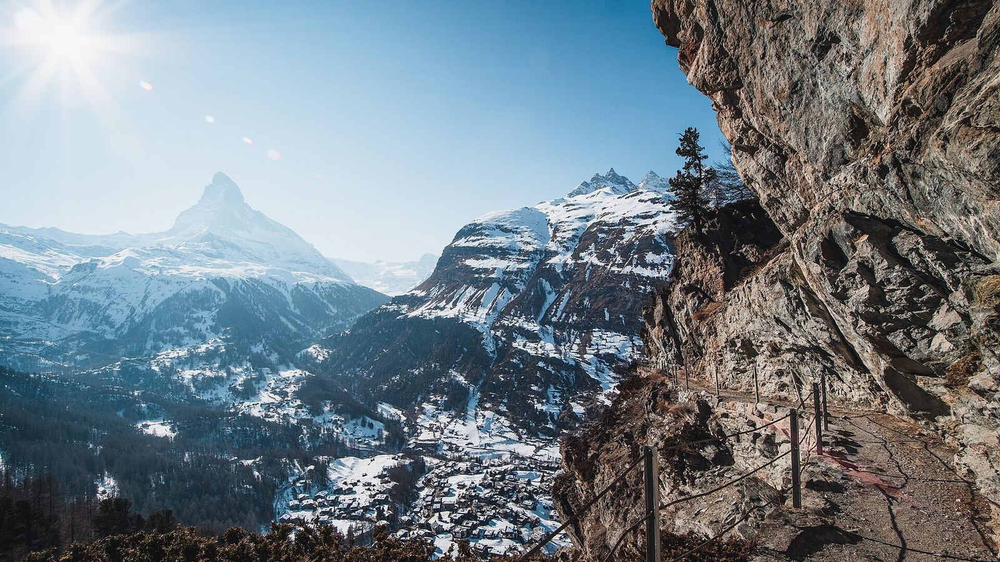
Option 5
Switzerland: Jungfrau base + Zermatt igloo night
Iceland → Zürich → Interlaken (11, with 1 igloo night) → TGV to Paris
Truly new: a night in an igloo and glaciers at 3,000 m+. But the base is often snowless and it is about $4.5k over D7.
Day by day
- Sat 19: BA via London 11:55 → Zürich 20:25; train to Interlaken
- 20–22: Jungfraujoch; Bussalp sledging day
- 23–24: train to Zermatt (2h15): Gornergrat, igloo night at Rotenboden
- 25: Matterhorn Glacier Paradise, back to Interlaken
- 26–29: Fox Run at First, night run at Alpiglen, Leukerbad Therme, Tierpark Goldau
- Wed 30: train to Basel/Zürich, TGV Lyria 4 h to Paris
Stay
- Apartment ROSY, Interlaken: 2 bed, kitchen, 9.1 (159), $7,080 for 11 nights, free cancellation (live, earlier this week).
- Iglu-Dorf Zermatt: Family igloo from CHF 627 for 3 people; 4th guest extra; phone or email booking only.
- Accor: Royal St. Georges Interlaken MGallery: suite $19,302 for 11 nights, no kitchen: not worth it. Novotel Zürich Airport Messe / City West if you need a Zürich night.
Experiences
| Tier | What | Family | 19–31 Dec |
|---|---|---|---|
| S | Iglu-Dorf igloo night, Zermatt | ~$1,300 (E) | Nightly from 19 Dec |
| S | Jungfraujoch | $340 | Daily incl. 24–26 |
| S | Gornergrat + Glacier Paradise | $360 | Daily |
| A | Sledging: Bussalp, First, Alpiglen | $440 (E) | Only if there's enough snow |
| A | Leukerbad Therme + Tierpark Goldau | $283 | Goldau open 25 Dec; Leukerbad 24–25 unconfirmed |
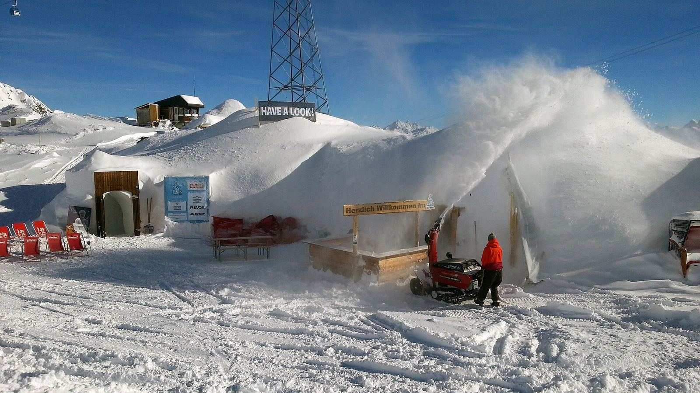
Catches
- Swiss lodging and food are expensive.
- 26 Dec–2 Jan is peak: queues at Jungfraujoch and Zermatt.
- Igloo for four must be confirmed by phone or email.
Cost lines (19–30 Dec block; R = live / operator, E = estimate)
| Flight Keflavík→Zürich, BA 19 Dec 11:55–20:25 (via LHR) | $1,098 | R |
| Bags | $150 | E |
| Apartment ROSY, Interlaken, 2 bed, 9.1 (159), free cancellation: 19–30 Dec | $7,080 | R |
| Swiss Travel Pass 15 days × 2 adults (kids free with Family Card) | $1,747 | R |
| TGV Lyria Basel/Zürich→Paris 30 Dec | $450 | E |
| Iglu-Dorf Zermatt igloo night (family igloo, 4th guest extra) | $1,300 | E |
| Jungfraujoch (−25% with pass) | $340 | R |
| Gornergrat + Matterhorn Glacier Paradise (−50% with pass) | $360 | R |
| Sledging days: Bussalp, First, Alpiglen night run | $440 | E |
| Leukerbad Therme family 3 h + Tierpark Goldau | $283 | R |
| Food, 11 days × $180 | $1,980 | E |
| Block 19–31 Dec | $15,228 | |
| Paris 10–12 + Iceland 12–19 + CDG night (D7) | $9,385 | R/E |
| Total | $24,613 | |
| Less 40,000 Accor points on Accor nights (see below) | −$1,296 | R |
| Net | $23,317 |
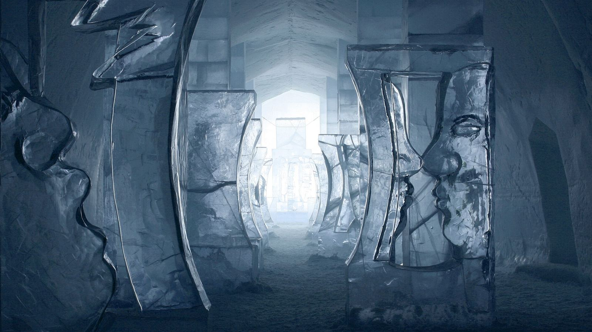
Option 6
Sweden: Kiruna, Icehotel and Sámi reindeer
Iceland → Stockholm → Kiruna (11) → Paris
Every family priority in one base: snow, reindeer, huskies, aurora, the Icehotel. About $5k over D7.
Day by day
- Sat 19: Finnair via Helsinki → Stockholm 16:55, SAS to Kiruna (evening)
- 20–23: Icehotel and Jukkasjärvi, aurora checks, Kiruna church and town
- 24: Christmas Eve (husky tours from 24 Dec at the Christmas rate)
- 25–27: Nutti reindeer sledding; day trip to Abisko national park
- 28–29: free days, sledding, aurora
- Wed 30: 05:45 SAS → Stockholm → Warsaw → CDG 18:45
Stay
- Scandic Kiruna: Family room (2 twins + bunk), 8.3 (1,861), $4,771 for 11 nights, free cancellation. No kitchen.
Experiences
| Tier | What | Family | 19–31 Dec |
|---|---|---|---|
| S | Nutti Sámi reindeer sledding | $1,782 | Daily 20 Nov–14 Apr |
| S | Icehotel day visit | ~$110 (E) | Open daily |
| S | Husky afternoon tour | $1,103 | Christmas rate 24 Dec–12 Jan |
| A | Aurora Sky Station, Abisko | — | Ages 12+ only: kids 7 and 10 can't go |
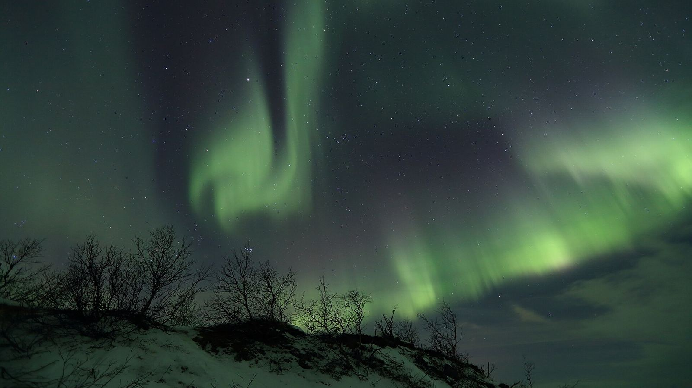
Catches
- Aurora Sky Station is 12+.
- The Stockholm→Kiruna fare and the Kiruna→CDG 05:45 connection need confirming; 2 stops on the way home.
- Hotel room, no kitchen.
- No Accor hotels in Kiruna.
Cost lines (19–30 Dec block; R = live / operator, E = estimate)
| Flight Keflavík→Stockholm, Finnair 19 Dec 10:00–16:55 (via HEL) | $1,611 | R |
| Flight Stockholm→Kiruna 19 Dec evening (SAS; fare not shown) | $700 | E |
| Bags | $300 | E |
| Scandic Kiruna family room, 8.3 (1,861), free cancellation: 19–30 Dec | $4,771 | R |
| Hire car Kiruna 11 days + fuel | $1,250 | E |
| Nutti Sámi Siida reindeer sledding (SEK 4,041 / 2,020) | $1,782 | R |
| Kiruna husky afternoon tour (SEK 2,500 / 1,250 from 24 Dec) | $1,103 | R |
| Icehotel day visit (2026/27 price not yet published) | $110 | E |
| Flight Kiruna→CDG 30 Dec 05:45–18:45 (SAS + LOT, 2 stops) | $1,840 | R |
| Food, 11 days × $220 (hotel room, no kitchen) | $2,420 | E |
| Block 19–31 Dec | $15,887 | |
| Paris 10–12 + Iceland 12–19 + CDG night (D7) | $9,385 | R/E |
| Total | $25,272 | |
| Less 40,000 Accor points on Accor nights (see below) | −$1,296 | R |
| Net | $23,976 |
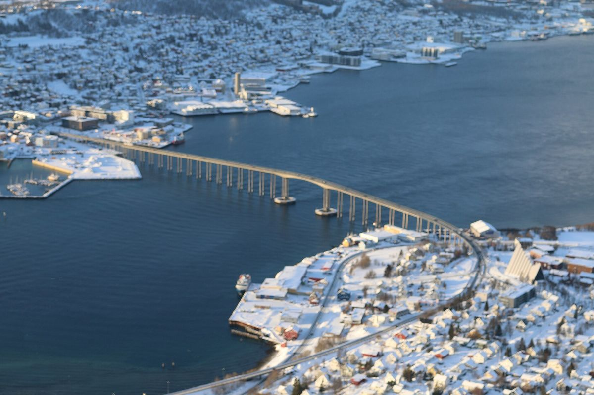
Option 7
Norway + Sweden: Arctic rail (Tromsø → Narvik → Kiruna)
Iceland → Oslo → Tromsø (4) → bus + Ofoten Line → Kiruna (7) → Paris
The richest experience list (whales, reindeer, huskies, fjords, Icehotel), but the most expensive at about $7k over D7.
Day by day
- Sat 19: Icelandair → Oslo 11:35, Widerøe → Tromsø
- 20–22: whale watching (8–9 h), Sámi reindeer camp, Fjellheisen cable car
- Wed 23: bus to Narvik (4 h), Ofoten/Malmbanan train to Kiruna
- 24–29: Christmas in Kiruna: huskies, Icehotel, aurora
- Wed 30: Kiruna 05:45 → CDG 18:45
Stay
- Parkgata city apartments, Tromsø: 2 bed, kitchen, 9.5 (6 reviews), $2,951 for 4 nights, free cancellation.
- Scandic Kiruna: Family room, $3,396 for 24–30, free cancellation.
Experiences
| Tier | What | Family | 19–31 Dec |
|---|---|---|---|
| S | Brim whale watching | $950 | Daily to 31 Jan; 95% sightings last season |
| S | Tromsø Sámi reindeer sledding | $1,020 | High season from 12 Dec |
| S | Kiruna husky tour | $1,103 | From 24 Dec |
| A | Icehotel | ~$110 (E) | Daily |
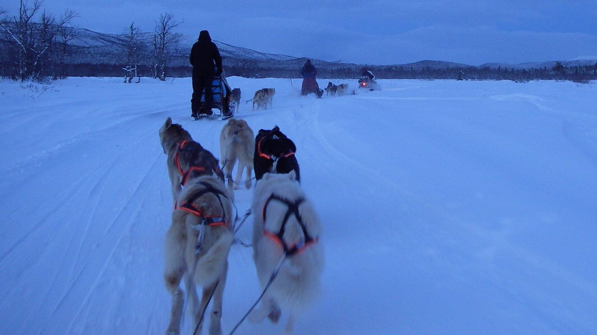
Catches
- Long transfer day on 23 Dec and a 05:45 start on 30 Dec.
- The Oslo→Tromsø fare wasn't shown; estimated.
- No Accor hotels at these bases.
Cost lines (19–30 Dec block; R = live / operator, E = estimate)
| Flight Keflavík→Oslo, Icelandair 19 Dec 07:50–11:35 non-stop | $1,676 | R |
| Flight Oslo→Tromsø 19 Dec afternoon (Widerøe; fare not shown) | $700 | E |
| Bags | $300 | E |
| Parkgata city apartments, Tromsø, 2 bed, 9.5 (6): 19–23 Dec | $2,951 | R |
| Bus Tromsø→Narvik + Ofoten/Malmbanan train Narvik→Kiruna 23 Dec | $400 | E |
| Kiruna 23–24 Dec, one night | $500 | E |
| Scandic Kiruna family room: 24–30 Dec | $3,396 | R |
| Hire car Kiruna 6 days | $600 | E |
| Brim whale watching, Christmas rate (NOK 2,189 / 1,094.50) | $950 | R |
| Tromsø Sámi reindeer sledding (NOK 2,350 / 1,175) | $1,020 | R |
| Kiruna husky afternoon tour | $1,103 | R |
| Icehotel day visit | $110 | E |
| Flight Kiruna→CDG 30 Dec 05:45–18:45 | $1,840 | R |
| Food, 11 days × $200 | $2,200 | E |
| Block 19–31 Dec | $17,746 | |
| Paris 10–12 + Iceland 12–19 + CDG night (D7) | $9,385 | R/E |
| Total | $27,131 | |
| Less 40,000 Accor points on Accor nights (see below) | −$1,296 | R |
| Net | $25,835 |
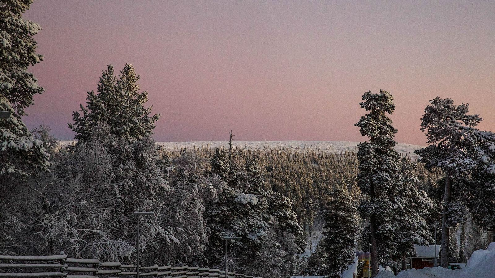
Option 8
Finland: Saariselkä and Inari, Arctic Lapland
Iceland → Helsinki → Ivalo → Saariselkä (11) → Paris
Classic Lapland without Rovaniemi's crowds, but Christmas lodging and the four Finnair legs make it the dearest single-country option.
Day by day
- Sat 19: Finnair → Helsinki 15:25, → Ivalo 20:55–22:40
- 20–23: husky farm, reindeer sleigh, Kiilopää fell walk
- 24–25: Christmas in a log cabin; Siida open 24th 10–14, 25th 12–17
- 26–29: aurora nights, sledging, optional Kakslauttanen glass igloo night (~€963 for two)
- Wed 30: Ivalo 09:15 → Helsinki → CDG 18:15
Stay
- Arctic Log Cabins, Saariselkä: 3 bed, kitchen, 8.9 (665), $8,756 for 11 nights, free cancellation.
Experiences
| Tier | What | Family | 19–31 Dec |
|---|---|---|---|
| S | Husky farm visit, 10 km | ~$1,370 (E adult) | Christmas runs |
| S | Reindeer farm + sleigh | ~$1,020 (E adult) | Christmas runs |
| A | Siida Sámi museum | ~$90 (E) | 24th 10–14, 25th 12–17 |
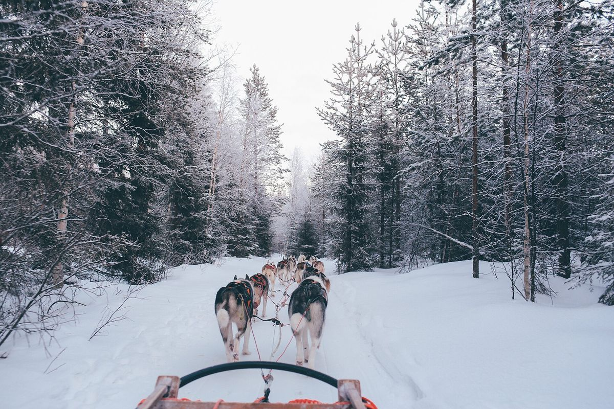
Catches
- $28k: about $8k over D7.
- Four flights; Ivalo→Helsinki on 30 Dec is "high".
- Accor: Helsinki only, for a connection.
Cost lines (19–30 Dec block; R = live / operator, E = estimate)
| Flight Keflavík→Helsinki, Finnair 19 Dec 10:00–15:25 non-stop | $1,138 | R |
| Flight Helsinki→Ivalo 19 Dec 20:55–22:40 | $403 | R |
| Flight Ivalo→Helsinki 30 Dec 09:15–10:45 | $1,485 | R |
| Flight Helsinki→CDG 30 Dec 16:05–18:15 | $1,378 | R |
| Bags | $300 | E |
| Arctic Log Cabins, Saariselkä, 3 bed, 8.9 (665), free cancellation: 19–30 Dec | $8,756 | R |
| Hire car Ivalo 11 days + fuel | $1,200 | E |
| Husky 10 km farm visit (child €187, adult est.) | $1,367 | E |
| Reindeer farm + sleigh (child €139, adult est.) | $1,017 | E |
| Siida Sámi museum, Inari | $90 | E |
| Food, 11 days × $160 | $1,760 | E |
| Block 19–31 Dec | $18,894 | |
| Paris 10–12 + Iceland 12–19 + CDG night (D7) | $9,385 | R/E |
| Total | $28,279 | |
| Less 40,000 Accor points on Accor nights (see below) | −$1,296 | R |
| Net | $26,983 |
Option 9
Czechia: Prague and Český Krumlov
Iceland → Prague (5) → Český Krumlov (3) → Prague (3) → Paris
Cheap and easy, but mostly cities: it fails the family's "just cities" and novelty tests.
Day by day
- Sat 19: Transavia via Amsterdam → Prague 22:20
- 20–23: Old Town, castle, markets, zoo
- 24–26: Český Krumlov at Christmas
- 27–29: Prague, Aquapalace
- Wed 30: Smartwings 12:25 → CDG 14:15
Stay
- Prague loft apartment with balcony: 2 bed, 9.6, $1,587 for 19–24.
- Apartmán Masaryk, Český Krumlov: 9.4, $1,080 for 24–27.
- The Nova Apart Hotel: $1,155 for 27–30.
- Accor alternative: Novotel Praha Wenceslas Square, Mövenpick Prague, Mercure Prague Centre (check the Accor+ rate on all.accor.com).
Experiences
| Tier | What | Family | 19–31 Dec |
|---|---|---|---|
| B | Prague markets | Free | To 6 Jan |
| B | Český Krumlov | ~$150 (E) | Castle interiors closed in winter |
| B | Aquapalace | ~$150 (E) | Daily |
Catches
- No snow adventure, animals or aurora to speak of.
Cost lines (19–30 Dec block; R = live / operator, E = estimate)
| Flight Keflavík→Prague, Transavia/KLM 19 Dec 14:45–22:20 (via AMS) | $1,934 | R |
| Bags | $150 | E |
| Prague loft apartment with balcony, 2 bed, 9.6: 19–24 Dec | $1,587 | R |
| Apartmán Masaryk, Český Krumlov, 9.4: 24–27 Dec | $1,080 | R |
| The Nova Apart Hotel, Prague: 27–30 Dec | $1,155 | R |
| Trains/buses Prague↔Český Krumlov | $300 | E |
| Prague Castle, Zoo Praha, Aquapalace water park, Krumlov castle | $700 | E |
| Flight Prague→CDG, Smartwings 30 Dec 12:25–14:15 | $1,187 | R |
| Bags | $150 | E |
| Food, 11 days × $115 | $1,265 | E |
| Block 19–31 Dec | $9,508 | |
| Paris 10–12 + Iceland 12–19 + CDG night (D7) | $9,385 | R/E |
| Total | $18,893 | |
| Less 40,000 Accor points on Accor nights (see below) | −$1,296 | R |
| Net | $17,597 |
Method
Flights: Google Flights, one way for 2 adults + 2 children, 22–23 Oct 2026; bags extra (estimated). Lodging: Booking.com, 2 adults + kids 7 and 10, rated 8+, entire units or family rooms. Activities: operator pages where stated, otherwise estimates (E). FX: €1 = $1.62, NOK 1 ≈ $0.145, SEK 1 ≈ $0.147, CHF 1 ≈ $1.75. Photos: Wikimedia Commons, credited under each image. Nothing is booked.